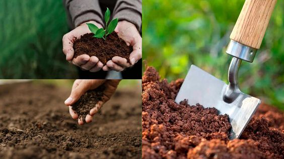

O QUE SÃO MÉTODOS EFICIENTES?
A agricultura desempenha um papel crucial na nossa sociedade, fornecendo alimentos essenciais para a população mundial. No entanto, a crescente demanda por alimentos e os desafios ambientais exigem que exploremos modelos de cultivo mais eficientes, capazes de maximizar o uso de recursos e aumentar a produtividade de forma sustentável. Neste texto, discutiremos alguns exemplos de modelos de cultivo eficientes que estão ganhando destaque.
EXEMPLOS MAIS EFICIENTES DE CULTIVO
A agricultura de precisão utiliza tecnologias avançadas, como drones e GPS, para otimizar o uso de insumos e aumentar a produtividade das colheitas.
A hidroponia permite o cultivo de plantas em ambientes controlados sem solo, economizando água e espaço, além de evitar muitas doenças do solo.
AGRICULTURA AQUAPONIA
Esse sistema integra a criação de peixes com o cultivo de plantas em um ambiente simbiótico. Os resíduos dos peixes são utilizados como fertilizantes naturais para as plantas, que, por sua vez, filtram e purificam a água para os peixes.
Essa relação simbiótica reduz significativamente o consumo de água em comparação com os sistemas convencionais de cultivo e criação de peixes.
AGRICULTURA DE CONSERVAÇÃO
A agricultura de conservação, também conhecida como agricultura de baixo impacto. Esse modelo envolve práticas que visam minimizar a perturbação do solo, como o uso de cobertura vegetal, rotação de culturas e plantio direto.
Ao proteger a camada superficial do solo e manter sua estrutura intacta, a agricultura de conservação reduz a erosão e a perda de nutrientes, além de melhorar a retenção de água. Essa abordagem contribui para a conservação dos recursos naturais, enquanto aumenta a produtividade e a sustentabilidade dos sistemas agrícolas.